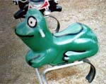
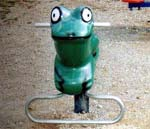
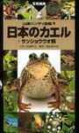
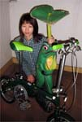
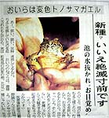
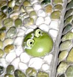

アンパンマンミュージアムに公園かえる遊具！  【高知発まさえ" 同志記者】それともうひとつ。 先日、高知県にあるアンパンマンミュージアムに行ったとき、ミュージアムの前に広場があって、片隅にミニアスレチック公園がありました。そこにあった遊具です。カエルに背中に乗ろう！なんて考えたこの遊具を作った人はカエラーに違いないと思います。日本中の公園にこの遊具を置いてほしいものですな！ 【全国かえる奉賛会】すごいー。すべての公園にこの遊具があれば、わが子の公園デビューも楽しくなるに違い無い。それにしても個性的なカエルだなー。大王ものってみたいぜええ。
 かえる本が刊行！日本産のカエル全４３種類を網羅！【江戸発山と溪谷社 出版部 神谷有二同志記者】カエル本を出しました。日本産のカエル全４３種類を網羅した、ハンディ版の図鑑です。なにしろ、全種、簡易スタジオで撮影した白バック写真（斜めと正面の２方向。めちゃくちゃかわいい）を原寸大で掲載し、それに美しい自然写真もいろいろ加えて構成しました。 世界のカエルや、カエルの後ろ姿を集めたコラム、パラパラマンガありと、盛りだくさんの楽しい本になっています。ぜひ！４月３０日までは、東京池袋のジュンク堂書店７Ｆにて出版記念カエル写真展をやってます。今週からは、手製のカエル絵はがきも販売する予定です。また、限定３０名に本をお買いあげいただくと絵はがき一枚プレゼントキャンペーンもやる予定です。 当社アドレスからも購入可能です。
かえる本すでにゲット！すごいーよ！！【帝都発じゅんこ同志記者】本屋にてとてもすばらしい本を見つけてしまい、こーふんして情報をお伝えします。それは、『日本のカエル』(山と渓谷社・解説：奥山風太郎/写真：松橋利光）という本です！4月1日に出たばかりらしいのですが、オールフルカラーのカエルの検索ハンディBOOKです！渋谷のBOOK1stという本屋の3階で、他の本を買おうとしたところ、レジにこの本の宣伝用ポップが飾ってありました。そこには、日本にいるいろんな蛙の姿が！！レジのお姉さんに本の場所を聞き、即購入しました。お値段は2000円でした。カエラー必携の本だと思われます。是非見てみてください。「買ってカエル？」という吹き出しのあるカエルのポップも罪ですよ(笑) ちょっと会社帰りの電車の中で読んだだけですが、(思わず自分の駅を乗り過ごしてしまいました）文章もとても丁寧で、奥山風太郎さんありがとう！（(≧０≦)）って感じです。
全国かえる奉賛会推薦図書に指定！【全国かえる奉賛会】すごいー。大王も欲しいぞ。この本！ポスターも気になるなー！全国かえる奉賛会推薦図書に指定するなりー。みんなどんどん買いまくり大増刷しようではないかああああああ。蓮かえる同志がカエル展４実行委員長に内定！【全国かえる奉賛会】お釈迦様がお生まれになった本日八日『花祭り』のよき日に、福岡かえる展４の開催が内定しました。今年は、蓮かえる同志が実行委員長をつとめます。かえる展４に関する最新情報は、専用ページでお知らせしますので、みんな見のがさないようにしようぜえええっ。また手伝ってくれる人や、出展したいって人も、ページをみていてください。今年もたくさんのカエラーとあえるので楽しみだなー。 蓮かえる同志は、昨年は、はるばる仙台から休暇をとって四日間、会場に詰めてくれた上に、今年の正月は、かえる大明神をかかえて、福岡県小郡市の『かえる寺』への奉納行事に参加してくれた、バリバリのカエラーなのである。 ぴのこ同志がカエル色自転車ゲット！ 【福岡発=ぴのこ同志記者】自転車を買い替えようかなああっと思っていたら、でかけた自転車屋になんと、緑でコーディネートされた新型自転車がありました。ハンドルとサドルが明るいグリーンで、車体も深い緑なんですよ。緑一色！ヘルメットもカエル式のにして、全身緑色で乗り回したら、すぐに有名になれるかも。
【全国かえる奉賛会】緑色に敏感反応してしまうのは、カエラーの習性なり。自転車はベネトンデザインらしい。次はきっとグリーンのフォルクスワーゲンのニュービートルだよねー。
 金色トノサマカエル発見！【福岡発非かえる系新聞】最近、一般紙がカエルニュースを流すことがおおいなーっ。福岡県筑豊のある町で、金色のトノサマガエルが発見されたそうぢゃああああ。埋没カエルを確認！ 【福岡発大王直筆】福岡市早良区百道にあるリンガーハット百道店の隣に、謎の公園があり、そこには謎なオブジェがあることで知られている。夜中になると、発行点滅する不思議なものなのだが、さらに不思議なのは、その塔みたいなものには、家族でつけっていた茶わんとか、学校でつかっていた文房具などが埋没しているのである。そして、たくさんの埋没物の中に、カエルがあるらしい！という噂があった。
その噂を確かめるべく、ある夜に見物にでかけて、丹念に探したところ、あったああああ。カエルの顔が、でているではないかあ。これを見つけると幸運があるというので、さっそくデジカメで撮影したのである。みんなも福岡に来たら、かえるを見つけて幸福になってくれい。
投稿採用者に武功カエル徽章を授与！ |

かえる古新聞過去に取り上げた記事を見出し付きで一覧したい人は、ここをクリック◆創刊号を見る◆先週号を見る◆話題の号を見る◆かえる新聞の昔を読む
|
私も入っています。。全国かえる奉賛会
大王様に会うには、このバナーをクリック。ずっと奥に写真館があるぞ。全国かえる奉賛会に入会するには、自分のホームページのどこかに、下の部分を追加するとバナーがリンク付きで表示されるぞ。どんどん入会しましょー |


|